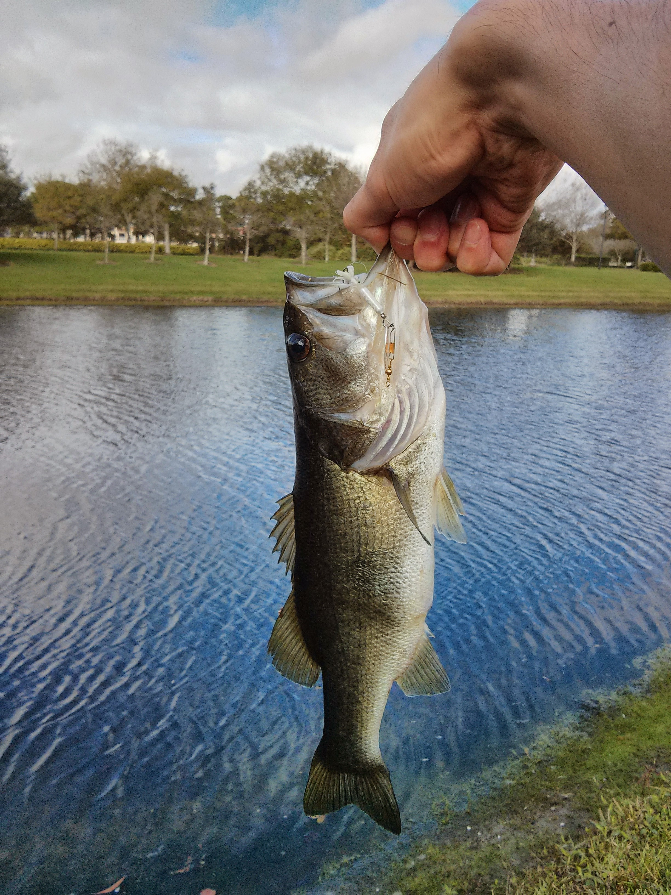

{% extends "_post.html" %}
{%load webdesign %}
{%hyde
title: "Bucket list: Catch a fish and eat it"
created: 2014-12-30 17:03:00
%}
{% block article %}
{%article%}
{% excerpt %}
I checked off one of my [bucket list]({{nav_links.bucket_list}}) items yesterday: catching a fish, cleaning it, and eating it.
{%endexcerpt%}
This was the last day of a family vacation in Port St. Lucie in Florida.
My original plans to go deep sea fishing fell through, so I went to the surprisingly well-stocked local Walmart to pick up some freshwater gear.
I was lucky enough to nab a healthy-looking 15" largemouth bass with a silver Mepps spinner from the lake behind our timeshare.

My mom, being Korean, knows a thing or two about preparing a whole fish, so I undertook the cleaning and cooking under her supervision.
We had it for dinner, and suffice to say, it was delicious.
{%endarticle%}
{% endblock %}